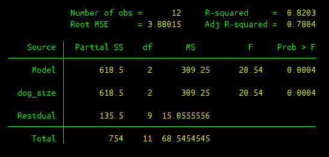
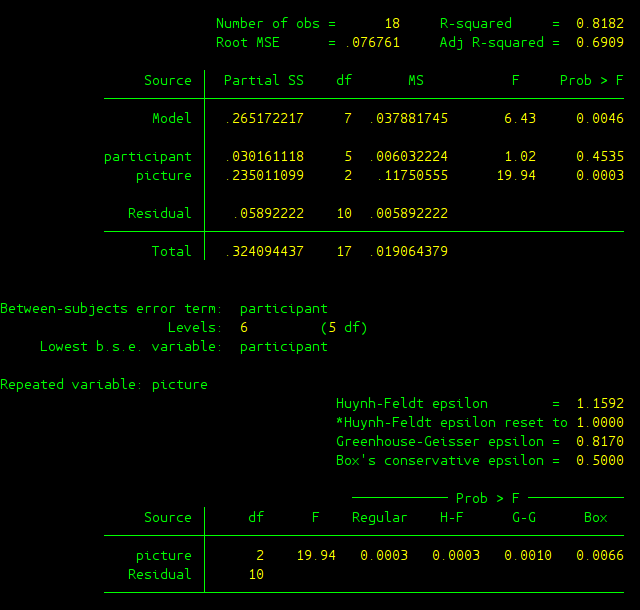

Sectio 3: Analysis of Variance (ANOVA)¶
This section opens the door of using Stata for conducting analysis of variance to you. If you still have fresh memory about exam 3, that’d be great. Since all the examples used in this section are taken from that exam. Never mind if cannot recall the questions on exam 3, you can always refer to exam 3 answer key on On-Course.
Section 3.1: One-way Between-Subject ANOVA¶
Dog Size on Dog Fear¶
By now, you need to remember to always set the working directory of STATA into the folder where holds the data. The data we are using in this example can be found in the last section “Do-files and Data files” (files). Also, do remeber to use clear all to clear the memory in STATA before you proceed.
This is question 3 in exam 3. Load the data we are about to analyze.
use dog_fear.dta
If you use edit to inspect your data, you will notice that categorical variable “dog_size” takes value 0, 1, or 2. Here 0 indicates small dog, 1 indicates medium dog, and 2 represents large dog. To remind us what these numbers stand for, we can use label define and label values command to change the numeric values into characters.
label define dog 0 "Small" 1 "Medium" 2 "Large", replace
label values dog_size dog
To conduct one-way between-subject ANOVA test, command oneway can gets you there.
oneway fear dog_size
The output is given in the following picture
By now, you should be very familiar with the source table. But let’s still work through the details of the output:
- Source: 1st column of the table gives you where various statistics come from: between groups, within groups, or total.
- SS: sum of squares
- df: degree of freedom
- MS: estimates of variances, we use \(S^2\) instead in the class.
- F: F-score that we love.
- Prob > F: p-value for this ANOVA test, which is much more informative than providing critical value as we did in the class.
- Bartlett’s test: This is a test regarding the implicit assumption we make when conducting ANOVA test, which is that we assume data in different groups are coming from populations with the same variance. Here p-value is given as Prob>chi2. In this case, p-value is 0.403 and hence it’s safe to assume equal variance and our ANOVA test is valid.
After getting a significant result, we can conduct post-hoc tests to check where exactly lies the difference which contributes to the significant result. oneway can help us realize this goal, but we need to provide more options after oneway command.
oneway fear dog_size, bonferroni scheffe
In STATA, options are always specified at the end of the main command. The options and the main command are always separated with a comma ”,”. The option “bonferroni scheffe” requires oneway command to also provide Bonferroni and Scheffe post-hoc test. The output is given in the following figure:
To implement one-way between ANOVA test, another more powerful command can also be used. anova command would be your alternative
anova fear dog_size
The output would look like the following:
The output deserves some elaboration:
- R-square: The effect size or \(R^2\) we talked about in the class.
- Adj R-squared: Adjusted \(R^2\) which takes into the adjustment of number of IVs, since \(R^2\) would in general increase as the number of IVs increases. More will be discussed when we learn linear regression models.
- Root MSE: The square root of mean square error, we leave this for later when we learn linear regression models.
- Partial SS: Same as SS in the table above, sum of squares.
- Model: This is related to linear regression, it indicates the model as a whole is significant or not. Here we only have one IV, and hence Model gives the same result as dog_size. p-value is 0.0004, and therefore the model as a whole is highly significant.
- dog_size: Same as Between groups.
- Residual: Same as Within groups.
Now after using anova, we can conduct Hukey HSD post-hoc test. Remember, you need to first run anova and then to conduct Hukey HSD test. It won’t work otherwise. Let’s first install tukeyhsd and also qsturng in STATA by typing:
findit tukeyhsd
findit qsturng
findit helps you to locate statistic packages available in the internet, following the instruction in the pop-up window to install it. After installing them, you can use it to conduct Tukey HSD post-hoc test.
tukeyhsd dog_size
Section 3.2: One-way Within-Subject ANOVA¶
Emotional Stimuli on Memory¶
Use clear all to free-up the memory in STATA in order to proceed. First we need to load the data. This is question 4 in exam 3
use memory.dta
Here we have three variables: “recall” is our DV which represents percentage of successful recalls, “participant” denotes the index of different participants (we have participant 1 to 6), and “picture” represents the types of pictures being displayed (0 is negative picture, 1 is neutral picture, and 2 is positive picture). Similarly, we can make our lives much easier by using labels if you need to later revisit our data analysis.
label define part 1 "A" 2 "B" 3 "C" 4 "D" 5 "E" 6 "F", replace
label values participant part
label define pic 0 "Negative" 1 "Neutral" 2 "Positive", replace
label values picture pic
To conduct one-way within-subject ANOVA test, we need to use anova
anova recall participant picture, repeated(picture)
Here the option repeated() need to added to inform anova to conduct one-way within-subject ANOVA test. The output is given as follows:
Two source tables are provided as outputs, let’s just focus on the first table.
- Model: This is again related to linear regression, where DV is “recall” and two IVs are “participant” and “picture”. This row tries to evaluate whether the linear regression model as a whole is significant or not.
- participant: This is what we refer to as Subject in the class.
- picture: This is what we refer to as Between in the class.
- Residual: This is what we refer to as Within in the class.
- Prob > F: This column gives p-value in this test. Note that we only computed one F score in class, which helped us to determine whether the factor we manipulated was significant or not. Apparently, p-value for IV “picture” is 0.0003 which gives us significant result. You may also notice that the other F score regarding “participant” is also given. Although we didn’t compute it in the class, you can easily infer that it tells you whether you see a significant difference among different participants. Here p-value is 0.4535, and therefore it’s not significant. There was not a significant performance difference among all the participants in this experiment.
In case you wonder post-hoc test, you can use tukeyhsd to achieve this
tukeyhsd picture
Section 3.3: Two-way Between-Subject ANOVA¶
To proceed, use clear all to free-up the memory in STATA. Load the data we will use, and this is question 1 in exam 3
use decision.dta
In the data we have three variables: “decision” is our DV which reflects people’s ability to differentiate between the objectively best and the objectively worst cars, “conscious_A” is factor A (first IV) which is about whether people were being distracted when making decisions (0 is conscious thought, and 1 is unconscious thought), and “complexity_B” is factor B (second IV) which is about the complexity of the task (0 is low level complexity, 1 is medium level, and 2 is high level). Label can be used to help us keep track of different levels of these two factors.
label define factor_A 0 "conscious" 1 "unconscious", replace
label values conscious_A factor_A
label define factor_B 0 "low" 1 "medium" 2 "high", replace
label values complexity_B factor_B
anova can help us conduct two-way between-subject ANOVA test. The generic form is
anova DV 1stIV##2ndIV
The example here, the command would be
anova decision conscious_A##complexity_B
To elaborate further the output,
- Model: Same as above, this is related to linear regression, where DV is “decision” and two IVs are “conscious_A” and “complexity_B”. This row evaluates whether the linear regression model as a whole is significant or not. p-value of 0.0013 indicate the linear regression model is significant under commonly used alpha level.
- conscious_A: This is the 1st IV, and we refer it as Between(A) in the class.
- complexity_B: This is the 2nd IV, and we refer it as Between(B) in the class.
- conscious_A#complexity_B: This is about interaction of this two IVs, we use Between(AXB) to denote it in the class.
The mean plot can also be generated using
predict yhat
graph twoway (connect yhat complexity_B if conscious_A == 0) ///
(connect yhat complexity_B if conscious_A == 1), ///
legend(label (1 conscious) label(2 unconscious))
predict yhat generate means for each group, and store the means in variable “yhat”. The graphing capability of STATA is pretty powerful, you may mess around with it yourself. The above command generates the following mean plot.
Section 3.4: Three-way Between-Subject ANOVA¶
Use clear all in order to proceed. Load the data we are going to analyze, and it’s based on question 1 in exam 3. I just add one more variable “sex” into the data.
use decision_2.dta
A third factor “sex” is added, where 0 means male and 1 means female. Label can be used to add more information to this variable.
label define factor_C 0 "male" 1 "female", replace
label values sex_C factor_C
The generic form of conducting three-way ANOVA analysis is very similar to two-way
anova DV 1stIV##2ndIV##3rdIV
For the example here, the command would be
anova decision conscious_A##complexity_B##sex_C
As you may remember, 7 F-scores can be generated from these three-way ANOVA test: 3 main effects, 3 two-way interaction, and 1 three-way interaction.
- conscious_A: This is about main effect of factor A.
- complexity_B: This is about main effect of factor B.
- sex_C: This is about main effect of factor C.
- conscious_A#complexity_B: Two-way interaction between factor A and factor B.
- conscious_A#sex_C: Two-way interaction between factor A and factor C.
- complexity_B#sex_C: Two-way interaction between factor B and factor C.
- conscious_A#complexity_B#sex_C: Three-way interaction of all three factors A, B and C.
You can also play around with graphing in STATA. The following command provide you with one possible way to get a mean plot which helps to visualize the three-way interaction in this example.
predict yhat
graph twoway (connect yhat complexity_B if conscious_A == 0 & sex_C == 0) ///
(connect yhat complexity_B if conscious_A == 1 & sex_C == 0), ///
legend(label (1 conscious) label(2 unconscious)) ///
title("Male") saving(male)
graph twoway (connect yhat complexity_B if conscious_A == 0 & sex_C == 1) ///
(connect yhat complexity_B if conscious_A == 1 & sex_C == 1), ///
legend(label (1 conscious) label(2 unconscious)) ///
title("Female") saving(female)
graph combine male.gph female.gph
Do-files and Data files¶
The do file and data files used in the examples can be found here.